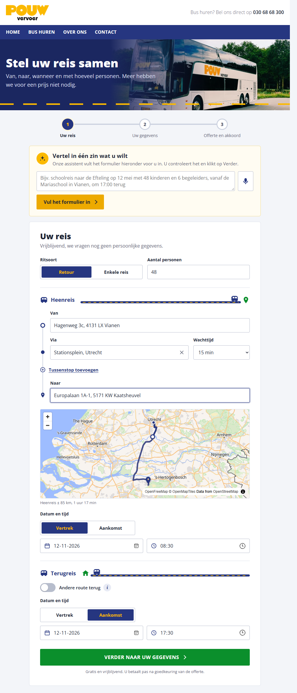

| Voor | Pouw Vervoer: directie, planning, sales en administratie |
| Adres | https://boekpouwvervoer.nl (live sinds 14 oktober 2026) |
| Versie van de app | 0.15.0 |
| Datum | 14 oktober 2026 |
| Opgesteld door | Daniel de Graaf |
boekpouwvervoer.nl is één systeem waarin een busrit van begin tot eind wordt afgehandeld: de klant stelt zijn reis samen, vraagt een prijs aan, krijgt een offerte, geeft akkoord met betalingsverplichting, betaalt wat vooraf verschuldigd is en ontvangt na de rit één eindfactuur. Pouw ziet alles in één dossier: wie de rit heeft aangevraagd, wie mag tekenen, wie de factuur betaalt, welke afspraken zijn gemaakt, welke voorwaarden zijn geaccepteerd, welke e-mails zijn verstuurd en wat er nog open staat.
Het platform doet drie dingen anders dan een losse offertetool:
Adressen
Klant: boekpouwvervoer.nl/reis (start) en boekpouwvervoer.nl/app (app installeren).
Pouw: boekpouwvervoer.nl/admin (backoffice, wachtwoord).
Deurwaarder: boekpouwvervoer.nl/deurwaarder (portaal, eigen wachtwoord).
Voorwaarden: boekpouwvervoer.nl/voorwaarden.
De site is ook een installeerbare app voor telefoon en computer, zonder app store. Een AI-assistent helpt de klant bij het invullen en helpt de planner in de backoffice.
| Stap | Wat | Wat er gebeurt | Wie |
|---|---|---|---|
| 1 | Reis samenstellen | Retour of enkele reis, aantal personen, vertrek, tussenstops, bestemming, datum en tijd. Adressuggesties, kaart met route, afstand en reistijd. Eventueel met de assistent in één zin. | Klant |
| 2 | Gegevens invullen | Aanvrager, opdrachtgever (wie mag tekenen) en factuurontvanger. Bijzonderheden, bus blijft bij de groep, reisleider. Verplicht akkoord met de voorwaarden. | Klant |
| 3 | Bevestiging aanvraag | Bedanktpagina en e-mail met de reis, het beleid van Pouw en de voorwaarden als pdf. De aanvraag staat in de backoffice met referentie EPV-nummer. | Automatisch |
| 4 | Offerte maken | Planner vult ritprijs en geschatte nakosten in. De klantscore bepaalt de aanbetaling. Afspraken van sales worden vastgelegd. Offerte wordt gemaild aan de tekenbevoegde, 14 dagen geldig. | Pouw |
| 5 | Akkoord | De tekenbevoegde opent de akkoordpagina, ziet reis, prijs, betaling, annuleringsregeling en vervoerder, accepteert de voorwaarden en klikt op "Akkoord: bestelling met betalingsverplichting". Is er een aanbetaling bij akkoord, dan betaalt hij direct via iDEAL. | Klant |
| 6 | Bevestiging bestelling | E-mail aan de tekenbevoegde (cc aanvrager) met alle gegevens en de voorwaarden als pdf: het exemplaar van de overeenkomst. De rit staat in de export voor Trip. | Automatisch |
| 7 | Tot en tijdens de rit | 24 uur bedenktijd (kosteloos annuleren), kosteloos wijzigen tot 7 dagen voor vertrek, klacht indienen. Herinneringen voor aanbetalingen. De chauffeur krijgt de digitale briefing op zijn telefoon en legt onderweg schade, rotzooi, afwijkingen en extra kosten vast, met foto's. | Klant, Pouw en chauffeur |
| 8 | Na de rit | Rit markeren als gereden, nakosten invoeren (met één klik uit het ritrapport), één eindfactuur met verrekening van wat al betaald is. Betaaltermijn 14 dagen. | Pouw |
| 9 | Betaling en opvolging | Automatische herinneringen op dag 0, 3, 10 en 17 (aanmaning of 14-dagenbrief). Pauze zolang een melding open staat. Creditnota bij een terechte klacht. | Automatisch en Pouw |
| 10 | Incasso | Onbetaalde factuur overdragen aan Armaere met het complete dossier, incassokosten en rente volgens de KNV-voorwaarden. Armaere werkt in een eigen portaal. | Pouw en Armaere |
Een aanvraag doorloopt deze statussen: nieuw offerte verstuurd wacht op betaling bevestigd gereden gefactureerd betaald, of geannuleerd. "Wacht op betaling" komt alleen voor als er bij het akkoord een aanbetaling verschuldigd is; de rit gaat dan pas naar de planning als die binnen is.
De eerste stap heeft dezelfde opbouw als de huidige offertetool van Pouw, in de huisstijl van pouwvervoer.nl. De klant hoeft nog geen persoonlijke gegevens te geven.

De tweede stap toont de samengestelde reis (met een link om die te wijzigen) en vraagt naar drie rollen. Die scheiding is bewust: de persoon die belt is vaak niet degene die mag tekenen of die de factuur betaalt, en juist daar ontstaan betaalproblemen.
Na het versturen ziet de klant de bedanktpagina met de reis op de kaart en krijgt hij een e-mail met de samenvatting, het beleid, de kernpunten van de voorwaarden, de link naar de voorwaarden en de voorwaarden als pdf-bijlage. De aanvraag krijgt een referentie (EPV-nummer) en staat direct in de backoffice.
De tekenbevoegde ontvangt de offerte per e-mail met een persoonlijke akkoordlink. De akkoordpagina is het bestelmoment en toont alles wat de wet daarvoor eist:
Na het akkoord legt de app naam, tijdstip, IP-adres en de geaccepteerde versie van de voorwaarden vast. Is er bij akkoord een aanbetaling verschuldigd, dan gaat de klant direct door naar de betaalpagina (iDEAL). De tekenbevoegde ontvangt een bevestigingsmail (cc de aanvrager) met alle gegevens en de voorwaarden als pdf: het exemplaar van de overeenkomst op een duurzame drager. Een offerte is 14 dagen geldig; daarna kan niet meer worden geaccordeerd, tenzij Pouw de offerte opnieuw verstuurt.
De site is een installeerbare app: op de iPhone via Delen en "Zet op beginscherm", op Android via Chrome en "App installeren", op de computer via Chrome of Edge. Geen app store, geen grote download, altijd de nieuwste versie. De pagina /app toont het icoon, een installeerknop, de uitleg voor het herkende toestel en een QR-code om de app te delen op de website, in e-mails of op een flyer. Onderin elke pagina staat de link "App op uw telefoon". Zonder verbinding toont de app een nette offline-pagina; formulieren en de backoffice worden nooit lokaal bewaard.
De backoffice is beveiligd met een wachtwoord en bestaat uit een overzicht met werklijst en een dossier per aanvraag.
Bovenaan staat de werklijst: alles wat open staat, op volgorde van deadline, met eigenaar en achterstand in dagen en een telling per eigenaar. Daarin staan open meldingen, open wijzigingsverzoeken, aanbetalingen die 48 uur na een herinnering nog niet binnen zijn, offertes die (bijna) verlopen en facturen over de vervaldatum. Daaronder de lijst van alle aanvragen met status, klant, ritdatum, klasse en bedragen.
| Onderdeel | Wat Pouw daar doet of ziet |
|---|---|
| Rollen | Aanvrager, opdrachtgever met tekenbevoegde, factuurontvanger en reisleider, met het resultaat van de KvK-controle. |
| Rit | De complete reis: ritsoort, personen, route met tussenstops en wachttijden, datums en tijden (vertrek of aankomst), andere route terug, bus blijft bij de groep, bijzonderheden, kaart met afstand en reistijd. Knop voor de chauffeursbriefing. |
| Opbouw van de score | Elke factor met bron en punten, de klasse en wat dat betekent voor de aanbetaling. De assistent geeft op verzoek een uitleg in twee zinnen, die bij het dossier wordt bewaard. De klasse kan per opdrachtgever handmatig worden aangepast, met verplichte reden. |
| Afspraken met de klant | Wat sales heeft toegezegd (opstaptijd, extra stop, bagage, prijsafspraak). Gaat mee in de offerte, de bevestiging, de akkoordpagina, de briefing en de export voor Trip. |
| Offerte | Ritprijs en geschatte nakosten invullen; de score wordt herberekend en het betaalplan getoond. Versturen mailt de offerte met de akkoordlink en de voorwaarden als pdf. Opnieuw versturen verlengt de geldigheid. |
| Aanbetaling | Termijnen met uiterste datum en status. Een overschrijving kan handmatig als ontvangen worden geregistreerd. |
| Rit en nakosten | Rit markeren als gereden, nakosten toevoegen (omschrijving en bedrag), eindfactuur maken en versturen. Betaling registreren. |
| Creditnota | Bedrag en reden; direct verrekend op de factuur en gemaild aan de klant. Is alles voldaan, dan staat de factuur op betaald. |
| Meldingen | Losse eindjes vastleggen met soort, eigenaar en deadline, en oplossen met een korte toelichting (zie hoofdstuk 6). |
| Assistent: mail opstellen | De planner schrijft in één regel wat hij wil laten weten; de assistent maakt een concept op basis van het dossier. De planner past aan en verstuurt. De mail komt in het logboek. |
| Annuleren | Annulering door de klant verwerken: de app rekent de kosten uit op de dag van opzegging (0% binnen de bedenktijd), maakt op verzoek een annuleringsfactuur met verrekening van aanbetalingen en mailt de bevestiging. |
| Overdragen aan Armaere | Pas mogelijk na de aanmaning (particulieren: 15 dagen na de 14-dagenbrief) en zonder open meldingen. Berichten met Armaere, terugtrekken. |
| Logboek en e-mails | Elke stap, elke e-mail (met bijlagen) en elke acceptatie van de voorwaarden, met tijdstip. Dit is het bewijsdossier. |
De briefing is printbaar én digitaal. De planner maakt op de briefingpagina een persoonlijke link voor de chauffeur, met QR-code, kopieerknop en WhatsApp-knop. De chauffeur opent de rit op zijn telefoon, zonder inloggen, en ziet tijden, route met tussenstops en wachttijden, kaart, contactpersoon tijdens de rit, afspraken en bijzonderheden. Daarbij:
Alles komt direct in het dossier: elke melding in het logboek met tijdstip en naam van de chauffeur, de foto's bij de briefing in de backoffice, en bij "Rit en nakosten" de meldingen met een bedrag met één klik als nakosten op de eindfactuur. Schade, rotzooi en extra kosten worden bovendien meldingen voor de administratie op de werklijst, afwijkingen voor de planning en incidenten voor operatie. Zolang zo'n melding open staat, gaan er geen herinneringen naar de klant: eerst de schade of de meerkosten met de klant regelen, dan factureren.
Waarom dit het verschil maakt. Schade en vervuiling door reizigers zijn volgens de KNV-voorwaarden (artikel 9.7 en 9.13) voor rekening van de opdrachtgever. Dat is alleen te verhalen als het op de dag zelf is vastgelegd: wat, waar, wanneer, met foto's vóór het opruimen. Een chauffeur die dat in het rapport zet, levert het bewijs dat de administratie later nodig heeft, bij de factuur, bij een klacht en bij de deurwaarder. De link werkt tot veertien dagen na de rit, zodat ook een late melding nog in het dossier komt.
Bevestigde ritten staan in een export (puntkomma-gescheiden, UTF-8) die in Trip kan worden ingelezen: referentie, klant, contactpersonen, ritsoort, personen, route met tussenstops en wachttijden, datums en tijden, afstand en reistijd per richting, bus blijft bij de groep, afspraken en bijzonderheden.
Elke aanvraag krijgt automatisch een score van 0 tot 100. De score start op 40 punten en wordt opgebouwd uit controleerbare feiten: het formulier, het KvK-register en de eigen betaalhistorie van de opdrachtgever. De score bepaalt de klasse en daarmee of en hoeveel vooraf wordt betaald.
| Factor | Bron | Punten |
|---|---|---|
| Startwaarde | Standaard | +40 |
| Klanttype onderwijs of overheid | Formulier en KvK | +25 |
| Bedrijf met actieve KvK-inschrijving | KvK | +15 |
| Vereniging of stichting met inschrijving | KvK | +5 |
| Onderneming ouder dan 3 jaar / jonger dan 1 jaar | KvK | +10 / −10 |
| E-maildomein hoort bij de organisatie | Automatische controle | +5 |
| Inkoop- of referentienummer opgegeven | Formulier | +5 |
| Eerdere facturen steeds op tijd betaald | Betaalhistorie | +25 |
| Eerder 1 tot 30 dagen te laat betaald | Betaalhistorie | −10 |
| Ooit meer dan 30 dagen te laat of naar incasso | Betaalhistorie | −30 |
| Ritwaarde boven € 5.000 | Offerte | −10 |
| Vertrek binnen 7 dagen na aanvraag | Formulier | −5 |
| Klasse | Score | Betaling vooraf |
|---|---|---|
| A | 70 en hoger | Geen aanbetaling. Eindfactuur na de rit, 14 dagen. |
| B | 50 tot 69 | 30% uiterlijk 14 dagen voor vertrek. Rest en nakosten op de eindfactuur. |
| C | 30 tot 49 | 50% bij akkoord, restant inclusief geschatte nakosten 7 dagen voor vertrek. |
| D | onder 30 | 100% plus geschatte nakosten bij akkoord. |
Geblokkeerd: bij een faillissement of surseance in het KvK-register, of een openstaande vervallen factuur bij dezelfde opdrachtgever, kan geen offerte worden gemaakt. De backoffice kan de klasse handmatig aanpassen, altijd met een reden die in het logboek komt.
Elk uur (of met de knop in de backoffice) controleert de app alle termijnen en facturen en verstuurt wat nodig is:
De meeste betaalproblemen ontstaan niet bij de klant, maar door losse eindjes in de eigen organisatie: een toezegging van sales die niet is vastgelegd, een rit die anders is uitgevoerd dan afgesproken, een chauffeur die te laat was, een klacht die blijft liggen, een creditnota die niet komt, een foutieve invoer in Trip. Hoe langer zo'n punt ligt, hoe moeilijker het incasseren wordt. Daarom werkt de backoffice met meldingen:
Waarom zo, en niet meteen de juridische weg? Een faillissementsaanvraag of dagvaarding als drukmiddel werkt alleen bij een onbetwiste vordering en een klant die wel kan maar niet wil betalen. Bij een lopend dispuut wijst de rechter die af, en het kost tijd, geld en de klantrelatie. Door disputen eerst op te lossen en het bewijs compleet te hebben (wie akkoord gaf, welke voorwaarden ter hand zijn gesteld, alle e-mails), blijft die weg over voor de enkeling die echt niet betaalt, en is die dan ook kansrijk.
Blijft een factuur ondanks de herinneringen en de aanmaning onbetaald, dan draagt Pouw hem vanuit het dossier over aan gerechtsdeurwaarder Armaere.
Op alle aanvragen, offertes en ritten gelden de Algemene Vervoer- en Reisvoorwaarden van KNV Busvervoer (versie 2025). Om er aanspraak op te kunnen maken, moet Pouw ze ter hand stellen en de acceptatie kunnen bewijzen. De app regelt dat zo:
| Moment van opzegging | Kosten |
|---|---|
| Binnen 24 uur na het akkoord (beleid Pouw) | 0% |
| Meer dan 22 dagen voor vertrek | 30% van de ritprijs, minimaal € 125 |
| 22 tot en met 15 dagen voor vertrek | 40% |
| 14 tot en met 3 dagen voor vertrek | 50% |
| 2 dagen of 1 dag voor vertrek | 75% |
| Op de dag van vertrek | 100% |
Annuleren kan alleen schriftelijk. De backoffice rekent de kosten uit op de dag van opzegging, maakt een annuleringsfactuur met verrekening van aanbetalingen en mailt de bevestiging. Zonder gesloten overeenkomst zijn er geen kosten.
Bovenop de voorwaarden hanteert de app het beleid van de huidige offertetool, en wijkt daar niet van af. Alle termijnen zijn instelbaar.
| Onderdeel | Hoe het is geregeld |
|---|---|
| Adres en certificaat | boekpouwvervoer.nl, DNS en beveiliging via Cloudflare, HTTPS verplicht; www en het technische adres sturen door naar het hoofdadres. |
| Hosting | De app draait bij Railway en wordt automatisch bijgewerkt bij elke nieuwe versie. Een statuspagina (/health) toont of de app draait en welke versie. |
| Gegevens | Alle aanvragen, dossiers, facturen, e-mails en logboeken staan in een PostgreSQL-database bij Railway. Sessies van bezoekers zijn versleuteld. |
| Verzending via Resend vanaf een adres op boekpouwvervoer.nl, met bijlagen en cc. Elke verstuurde e-mail staat in het logboek van het dossier. | |
| Betalen | iDEAL via Mollie. Tot de Mollie-koppeling is geactiveerd simuleert de betaalpagina een geslaagde betaling (demo). |
| KvK-controle | Via de KvK API. Zonder sleutel geldt elk nummer als ingeschreven (demo) en wordt de leeftijd van de onderneming niet meegewogen. |
| Adressen en kaart | Nederlandse adressen van het Kadaster (PDOK), bestemmingen en buitenland van Photon (OpenStreetMap), routes van OSRM, kaart van OpenFreeMap. Gratis diensten zonder sleutel, altijd via de eigen server zodat de browser van de klant geen externe diensten aanroept. |
| AI-assistent | Claude (Anthropic). De assistent noemt nooit prijzen of toezeggingen, verzint geen feiten en werkt alleen met wat in het dossier staat. Zonder sleutel staat hij uit. Omdat persoonsgegevens naar Anthropic gaan, hoort hier een verwerkersovereenkomst bij. |
| Beveiliging | Wachtwoorden voor backoffice en deurwaarder, beperkt aantal inlogpogingen, beveiliging tegen vervalste formulieren (CSRF), strikte Content-Security-Policy, geen inline scripts. Akkoordlinks zijn persoonlijk en onvoorspelbaar. |
| Versies | Elke wijziging krijgt een versienummer met een regel in het wijzigingslogboek. Het nummer staat onderin elke pagina en op /health. |
| Instellingen | Termijnen (bedenktijd, wijzigen, geldigheid offerte, werkdagen voor meldingen), e-mailadres van de planning, bedrijfsgegevens (KvK, btw), naam van de deurwaarder, wettelijke rente en de kaartstijl zijn instelbaar zonder aanpassing van de code. |
Het platform is live en kan getest worden. Voor echte boekingen zijn nog enkele keuzes en koppelingen nodig:
| Versie | Datum | Wat is toegevoegd of gewijzigd |
|---|---|---|
| 0.15.0 | 14 okt 2026 | Digitale chauffeursbriefing met ritrapport: checklist, schade, rotzooi, afwijkingen, extra kosten en incidenten met foto's, direct in het dossier en op de werklijst. |
| 0.14.x | 14 okt 2026 | Domein boekpouwvervoer.nl live; beschrijving voor Pouw als PDF. |
| 0.14.0 | 13 okt 2026 | Busje op de reis-stap als voortgangsmeter per reisdeel. |
| 0.13.1 | 13 okt 2026 | Agenda en tijdkiezer openen met één klik; datum in het verleden onmogelijk. |
| 0.13.0 | 13 okt 2026 | Pagina /app met installeerknop, uitleg per toestel en QR-code. |
| 0.12.x | 13 okt 2026 | Installeerbare app (PWA) met offline-pagina; veilige doorverwijzing naar het eigen domein. |
| 0.11.x | 13 okt 2026 | Chauffeursbriefing per rit; voorbereiding eigen domein. |
| 0.10.0 | 13 okt 2026 | Incassokosten en rente volgens de KNV-voorwaarden, in aanmaning en 14-dagenbrief. |
| 0.9.x | 13 okt 2026 | Backoffice volgens de input van Pouw: afspraken, meldingen met eigenaar en deadline, werklijst, creditnota, klacht door de klant; animatie op de kopjes Heenreis en Terugreis. |
| 0.8.x | 13 okt 2026 | Beleid van Pouw overgenomen (bedenktijd, wijzigen, betaling na afloop, bereikbaarheid, geldigheid offerte); kaart voor heel Europa; snellere suggesties. |
| 0.7.x | 13 okt 2026 | Adressuggesties met plaats; kaart met route, afstand en reistijd op alle pagina's en in de export. |
| 0.6.0 | 13 okt 2026 | Voorwaarden ter hand gesteld als pdf; bestelknop; bevestiging van de bestelling; annuleren volgens artikel 5.1. |
| 0.5.0 | 13 okt 2026 | KNV-voorwaarden in de app, verplichte acceptatie bij aanvraag en akkoord, vastgelegd als bewijs. |
| 0.4.0 | 13 okt 2026 | Boekingsvelden compleet: terugdatum en -tijd, tussenstops, andere route terug, bus blijft. |
| 0.3.0 | 13 okt 2026 | AI-assistent: intake in één zin, uitleg bij de score, concept-mails; versienummers. |
| 0.2.x | 13 okt 2026 | Reis-stap zoals de offertetool van Pouw, in de huisstijl; domeinnaam boekpouwvervoer.nl. |
| 0.1.x | 12 okt 2026 | Eerste versie: aanvraag met drie rollen, klantscore en aanbetaling, backoffice, akkoord met iDEAL, eindfactuur, herinneringen, incasso via Armaere met portaal; huisstijl Pouw Vervoer. |
Het volledige wijzigingslogboek staat bij de broncode (CHANGELOG.md).